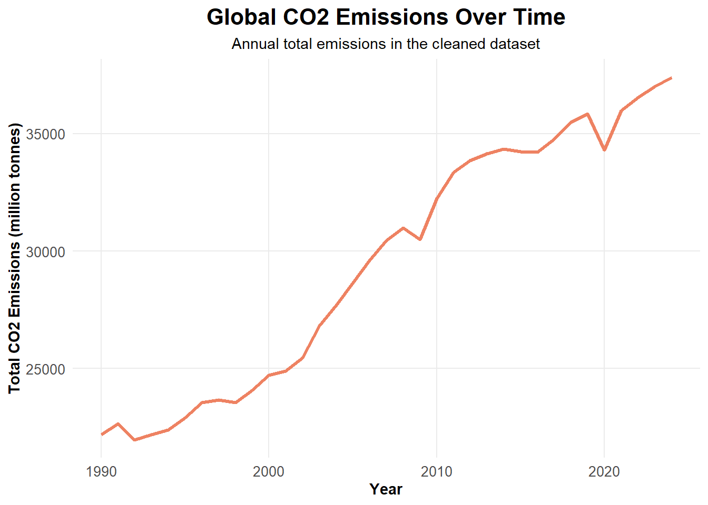
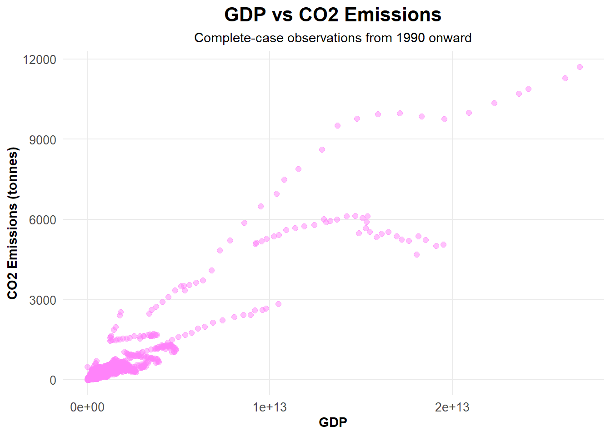
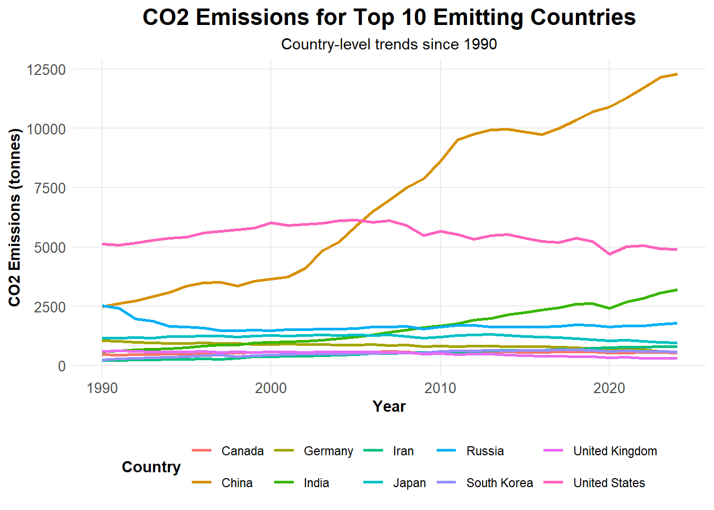
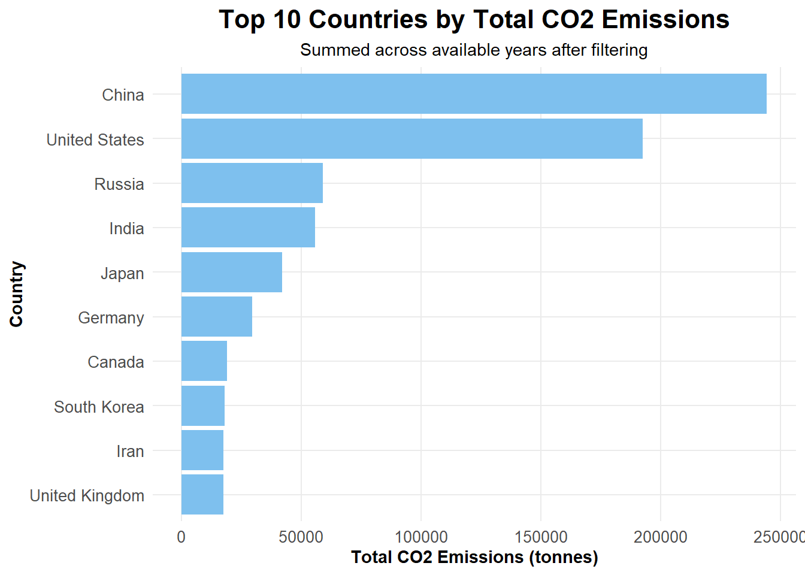
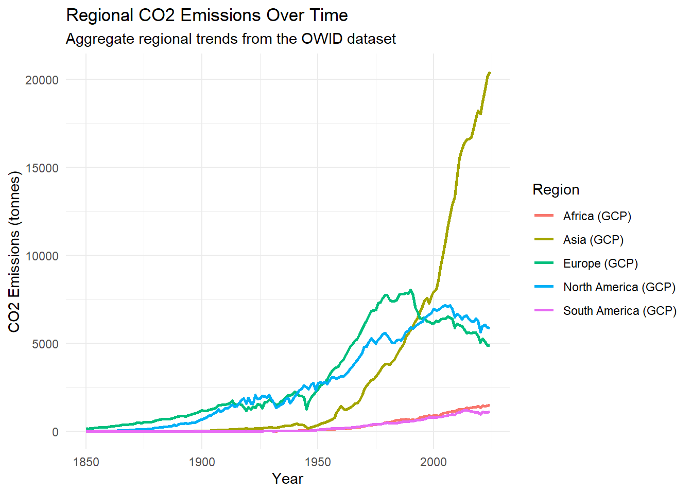

Carbon dioxide emissions are a major indicator for understanding the relationship among economic development, energy use, and climate change. This study is motivated by the broader challenge of climate change. This paper analyzes country-year observations from the Our World in Data \(CO_2\) and Greenhouse Gas Emissions dataset to study how emissions vary across countries and overtime from 1990 onward. The analysis combines exploratory data analysis, principal components analysis, and predictive modeling to examine how \(CO_2\) emissions relate to GDP, population, and primary energy consumption. The report also emphasizes the importance of time-aware model evaluation. Overall, this study provides a structured, data-driven analysis of global emission trends and their relationship to broader economic and energy indicators.
Human greenhouse gas emissions are a primary driver of contemporary climate change. As economies expand, populations grow, and energy demand increases, so do emissions. However, the strength and structure of these relationships vary across countries and over time. Understanding these patterns is important for both societal and scientific advancement, since emissions are closely connected to climate policy, sustainable development, and long-term environmental risk.
This problem is challenging because emissions are influenced by many interconnected factors, inducing industrialization, energy infrastructure, economic scale, and different policies around the world. The data are also collected over time which means the time series structure must be accounted for during the analysis. Ignoring this time-series structure can produce misleading results when evaluating predictive models.
This research will analyze country-level data from the Our World in Data \(CO_2\) and Greenhouse Gas Emissions dataset, focusing on observations from 1990 onward. The goals of this analysis are to explore global and country-level trends in \(CO_2\) emissions, examine how emissions relate to GDP, population, and primary energy consumption, and evaluate predictive models for \(CO_2\) emissions from these covariates. Due to the nature of this dataset, the time series structure will be considered in the data splitting and model evaluation process.
Data Collection
The data used in this analysis come from the Our World in Data \(CO_2\) and Greenhouse Gas Emissions dataset, a standardized dataset compiled from multiple international sources, including energy, economic, and demographic sources into a standardized longitudinal format. Each observation corresponds to one country in one year, making it possible to study how emissions and related variables change over time.
The analysis focused on a subset of variables most relevant to the research question, including country, year, country code, total \(CO_2\) emissions, \(CO_2\) emissions per capita, GDP, population, and primary energy consumption. Total \(CO_2\) emissions, measured in million tonnes, served as the primary response variable because they directly represent the emissions outcome of interest. \(CO_2\) emissions per capita provide a population-adjusted measure of emissions intensity. GDP represents economic output, population represents demographic scale, and primary energy consumption reflects total energy demand. Together, these variables capture several of the broad structural factors commonly linked to national emission patterns.
One major strength of the dataset is that it includes repeated yearly observations, allowing emissions to be studied over time rather than in a single cross section. At the same time, the dataset has important limitations to be aware of. The original data include both individual countries and broader regional or economic aggregates. Filtering was necessary to align the analysis with a country-level research question. Some variables also contained missing values, which reduced the number of observations available for predictive modeling.
Data Preprocessing
Several preprocessing steps were performed before analysis. Only variables relevant to emissions, economic output, population, and energy use were retained. Next, the data were restricted to years 1990 and later in order to focus on more recent emissions patterns. Observations without valid country codes were removed so that the dataset would reflect identifiable individual countries rather than broader regional or economic groupings.
Missing values were handled differently depending on the purpose of the analysis. For exploratory analysis, a broader cleaned dataset was retained so that overall patterns could be studied using as many observations as possible. For predictive modeling, rows with missing values in the main response or predictor variables were removed so that all models would be fit and compared on the same complete set of observations. No imputation was used.
Exploratory plots also informed later modeling decisions. Specifically, global \(CO_2\) emissions over time showed a clear temporal structure, which motivated the use of time-aware model evaluation rather than random train-test splitting. In addition, total \(CO_2\) emissions, GDP, population, and primary energy consumption were all strongly right-skewed which later motivated modeling on a log-transformed scale.
odf <-read_csv("../data/owid-co2-data.csv")
Rows: 50411 Columns: 79
── Column specification ────────────────────────────────────────────────────────
Delimiter: ","
chr (2): country, iso_code
dbl (77): year, population, gdp, cement_co2, cement_co2_per_capita, co2, co2...
ℹ Use `spec()` to retrieve the full column specification for this data.
ℹ Specify the column types or set `show_col_types = FALSE` to quiet this message.
A basic graph is shown in the early EDA process. Global \(CO_2\) emissions show a strong upward trend from 1990 and onward, reflecting increasing industrial activity and energy demand. Temporary declines are visible around 2008-2009 and 2020, most likely corresponding to global economic disruptions such as the financial crisis of 2008 and 2020 COVID-19 outbreak. Overall, the long-term trend suggests sustained growth in emissions over time.
odf_clean %>%group_by(year) %>%summarize(global_co2 =sum(co2, na.rm =TRUE)) %>%ggplot(aes(x = year, y = global_co2)) +geom_line() +labs(title ="Global CO2 Emissions Over Time",x ="Year",y ="Total CO2" ) +theme_minimal()
To better understand the structure of the dataset and inform modeling choices, global trends, country-level variation, and relationship between economic activity and emissions were examined.
Global Trends over Time
Aggregate \(CO_2\) emissions shows a clear upward trajectory from 1990 onward with rapid growth beginning in the early 2000s. While there is a slight decline around 2020, the overall pattern remains upward. At a global level, emissions have continued to scale with industrial and economic expansion over time.
theme_proj <-function() {theme_minimal() +theme(plot.title =element_text(face ="bold", size =16, hjust =0.5),plot.subtitle =element_text(size =11, hjust =0.5),axis.title =element_text(face ="bold"),axis.text =element_text(size =10),legend.position ="bottom",legend.title =element_text(face ="bold"),panel.grid.minor =element_blank() )}odf_clean %>%group_by(year) %>%summarize(global_co2 =sum(co2, na.rm =TRUE)) %>%ggplot(aes(x = year, y = global_co2)) +geom_line(color ="salmon2", linewidth =1.2) +labs(title ="Global CO2 Emissions Over Time",subtitle ="Annual total emissions in the cleaned dataset",x ="Year",y ="Total CO2 Emissions (million tonnes)" ) +theme_proj()

Global \(CO_2\) emissions increased strongly from 1990 onward, with temporary declines around 2008–2009 and 2020.
GDP and \(CO_2\) Relationship
The scatterplot of GDP vs \(CO_2\) emissions shows a strong positive association, though the relationship is not linear. At lower GDP levels, emissions increase gradually while higher GDP values are associated with a wider spread of emissions outcomes. This dispersion in the scatterplot suggests heterogeneity across countries, with some high-GDP countries maintaining lower emissions than others, possibly because of differences in energy efficiency or policy.
odf_model %>%ggplot(aes(x = gdp, y = co2)) +geom_point(color ="orchid1", alpha =0.5, size =2) +labs(title ="GDP vs CO2 Emissions",subtitle ="Complete-case observations from 1990 onward",x ="GDP",y ="CO2 Emissions (tonnes)" ) +theme_proj()

GDP and \(CO_2\) emissions were positively associated, although the spread of emissions widened substantially at higher GDP levels.
Country Level Trends
Focusing on the top 10 emitting countries, China shows the most dramatic increase, with noticeable peak after 2000 and continues to become a dominant contributor. India also shows steady growth, though at a lower magntitude. The United States and Germany appear more stable or slightly declining over time, possibly due to changes in energy use or regulation.
top_countries <- odf_clean %>%group_by(country) %>%summarize(total_co2 =sum(co2, na.rm =TRUE)) %>%arrange(desc(total_co2)) %>%slice(1:10) %>%pull(country)odf_clean %>%filter(country %in% top_countries) %>%ggplot(aes(x = year, y = co2, color = country)) +geom_line(linewidth =1) +labs(title ="CO2 Emissions for Top 10 Emitting Countries",subtitle ="Country-level trends since 1990",x ="Year",y ="CO2 Emissions (tonnes)",color ="Country" ) +theme_proj()

Among the top-emitting countries, China showed the steepest increase after 2000, while other major emitters followed more gradual or stable trends.
Total Emissions by Country
When emissions are aggregated across all years, China and the United States account for the largest shares by a substantial margin. The countries following the two contribute significantly less in comparison. These patterns reinforce the importance of country scale in the analysis and suggests that national differences may remain important even aftaer accounting for broad macro-level predictors.
odf_clean %>%group_by(country) %>%summarize(total_co2 =sum(co2, na.rm =TRUE)) %>%arrange(desc(total_co2)) %>%slice(1:10) %>%ggplot(aes(x =reorder(country, total_co2), y = total_co2)) +geom_col(fill ="skyblue2") +coord_flip() +labs(title ="Top 10 Countries by Total CO2 Emissions",subtitle ="Summed across available years after filtering",x ="Country",y ="Total CO2 Emissions (tonnes)" ) +theme_proj()

China and the United States accounted for the largest total \(CO_2\) emissions by a substantial margin over the study period.
Regional Emissions Trends
Regional emissions trends provide additional context for the country-level analysis by showing how broader parts of the world contributed differently to overall \(CO_2\) emissions over time. The regional plot suggests Asia experienced the strongest growth across the study period compared to other continents.
region_df <- odf %>%select(country, year, co2) %>%filter(country %in%c("Africa (GCP)","Asia (GCP)","Europe (GCP)","North America (GCP)","South America (GCP)" ))ggplot(region_df, aes(x = year, y = co2, color = country)) +geom_line(linewidth =1) +labs(title ="Regional CO2 Emissions Over Time",subtitle ="Aggregate regional trends from the OWID dataset",x ="Year",y ="CO2 Emissions (tonnes)",color ="Region" ) +theme_minimal()

Regional \(CO_2\) emissions trends were uneven, with Asia showing the strongest growth over time relative to other regions.
Unsupervised Learning
Principal Components Analysis
As an extension of the exploratory data analysis, a principal analysis component was implemented to summarize the multivariate structure. PCA was appropriate because the variables of interest \(CO_2\) emissions, \(CO_2\) emissions per capita, GDP, population, and primary energy consumption were measured on different scales and were also strongly related to one another. To reduce the influence of right-skewness and make the components easier to interpret, the variables were log-transformed and then standardized before fitting PCA.
The PCA results showed that most of the variation in the selected variables could be summarized by only two components. The first principal component (PC1) explained 76.2% of the total variance, while the second principal component (PC2) explained 21.8%. Together, the first two components accounted for approximately 98.0% of the total variation. The loadings indicated that \(CO_2\), GDP, and primary energy consumption contributed strongly and positively to PC1, suggesting that this component reflects an overall scale dimension. Population also loaded positively on PC1 but less strongly. PC2 was driven mainly by a contrast between population and \(CO_2\) emissions per capita. \(CO_2\) emissions per capita had a large positive loading on PC2 while population had a large negative loading. This suggests that the second component distinguishes observations with relatively high per-capita emissions from those with larger population size.
To assess country-level structure more clearly, PCA scores aggregated at the country level were examined carefully to highlight the top-emitting countries. The PCA scores plot did not reveal sharply separated clusters but instead suggested that countries vary along continuous dimensions in the reduced PCA space.
Overall, these results show that the main variables in the analysis are organized primarily along two interpretable axes, one related to national scale and the other related to the contrast between population size and per-capita emissions. This finding supports the broader conclusion that global emission patterns are driven both by country size and by how emissions are distributed relative to the population base.
The PCA loadings indicate that \(CO_2\), GDP, and primary energy consumption contributed strongly to the first principal component, while the second component mainly contrasted population size and \(CO_2\) emissions per capita.
Predictive Modeling
Time-Aware Data Splitting
A time-based splitting was used since the dataset is organized by year. This ensured that the models were trained on earlier years and evaluated on later years. Using a random split would ignore the time-series structure of the data and could make predictive performance look better than it actually is. The final training set included observations from 1990 to 2017, while the test set covered 2018 to 2022. Although this split is not perfectly balanced, that is not a weakness in itself. The more important goal here was preserving time order and avoiding leakage of later information into the training set.
\(CO_2\) emissions, GDP, population, and primary energy consumption were transformed because these variables are strongly right-skewed, Modeling them on the log scale reduced the influence of extremely larged observations and made the regression more stable. After this transformation, a baseline mean model for \(log(CO_2)\) was fitted which predicted the average training-set value of \(log(CO_2)\) for every observation in the test set. This baseline performed poorly with a RMSE of 1.88, a MAE of 1.515, and a negative \(R^2\) of -0.0229.
# A tibble: 1 × 4
model RMSE MAE R2
<chr> <dbl> <dbl> <dbl>
1 Baseline Mean (log scale) 1.88 1.52 -0.0229
Full Linear Regression for Predicting \(log(CO_2)\)
A full linear regression model was then fitted for predicting \(log(CO_2)\) using the predictors. This model performed better than the baseline with a RMSE of 0.338, a MAE of 0.243, and a \(R^2\) of 0.967. These results suggest that the transformed predictors contain substantial predictive informative for \(CO_2\) emissions. However, the correlation matrix showed that the predictors still overlapped, especially for log-transformed GDP and log-transformed primary energy consumption with a correlation of 0.944, indicating that multicollinearity is still an issue.
Reduced Linear Regression for Predicting \(log(CO_2)\)
To address this, a reduced linear regression model was fitted using only log-transformed population and log-transformed primary energy consumption. The reduced model performed nearly as well as the full model, with a RMSE of 0.345, a MAE of 0.249, and a r-squared of 0.9666. The difference in performance between the two models were very small, suggesting that GDP contributed little unique predictive information once population and primary energy consumption were already included.
# A tibble: 1 × 4
model RMSE MAE R2
<chr> <dbl> <dbl> <dbl>
1 Reduced Log-Linear Regression 0.345 0.249 0.966
Random forest for \(log(CO_2)\)
To go beyond linear regression, a random forest model was fitted using the same train-test split and the same log-transformed predictors. Random forest was chosen as a more flexible machine learning method because it can capture nonlinear relationships and interactions without assuming a strictly linear form.
The random forest model outperformed all other models. It achieved and RMSE of 0.278, an MAE of 0.192, and an \(R^2\) of 0.978 on the log scale. This was an improvement over both the full and reduced linear regression models, suggesting that some nonlinear structure remained in the relationship between \(CO_2\) emissions and the selected predictors.
In the predictive modeling stage, the baseline mean model for \(log(CO_2)\) performed poorly, with an RMSE of 1.883, an MAE of 1.515, and a negative \(R^2\) of -0.023. The full linear regression model for predicting \(log(CO_2)\)substantially improved on this baseline, with an RMSE of 0.338, an MAE of 0.243, and an \(R^2\) of 0.967. A reduced linear regression model excluding GDP performed almost as well, with an RMSE of 0.345, an MAE of 0.249, and an \(R^2\) of 0.966. Finally, the random forest model achieved the strongest predictive performance overall, with an RMSE of 0.278, an MAE of 0.192, and an \(R^2\) of 0.978. This suggests that a more flexible machine learning approach was able to capture additional structure beyond what was modeled by the linear regressions.
# A tibble: 1 × 4
model RMSE R2 MAE
<chr> <dbl> <dbl> <dbl>
1 Random Forest for log(CO2) 0.278 0.978 0.192
Prediction Diagnostics
In addition to reporting global performance metrics, observed vs. predicted plots were examined to assess how well the models fit across the full range of the reponse. Both the reduced linear regression model and the random forest tracked the observed response reasonably well with the random forest predictions slightly closer to the reference line. This supports the conclusion that the random forest provided the strongest predictive performance overall.
These diagnosticss plots are useful because summary statistics such as RMSE and \(R^2\) do not show whether a model performs equally well across all observations. The comparison plot showed that both models fit the data reasonably well, while making it clear that the random forest had the tighter overall fit.
results_tbl <-tibble(model =c("Baseline Mean for log(CO2)","Full Linear Regression for log(CO2)","Reduced Linear Regression for log(CO2)","Random Forest for log(CO2)" ),RMSE =c( baseline_log_rmse, log_rmse, reduced_rmse, rf_rmse ),MAE =c( baseline_log_mae, log_mae, reduced_mae, rf_mae ),R2 =c( baseline_log_r2, log_r2, reduced_r2, rf_r2 ))results_tbl
# A tibble: 4 × 4
model RMSE MAE R2
<chr> <dbl> <dbl> <dbl>
1 Baseline Mean for log(CO2) 1.88 1.52 -0.0229
2 Full Linear Regression for log(CO2) 0.338 0.243 0.967
3 Reduced Linear Regression for log(CO2) 0.345 0.249 0.966
4 Random Forest for log(CO2) 0.278 0.192 0.978
obs_pred_rf <- tibble::tibble(observed = y_test,predicted = y_preds)ggplot(obs_pred_rf, aes(x = observed, y = predicted)) +geom_point(alpha =0.5, size =1.5, color ="orchid2") +geom_abline(slope =1, intercept =0, linetype ="dashed", color ="gray40") +theme_minimal() +labs(title ="Observed vs Predicted log(1 + CO2): Random Forest",x ="Observed log(1 + CO2)",y ="Predicted log(1 + CO2)" )
Both models tracked observed log(\(CO_2\)) reasonably well, but the random forest predictions stayed slightly closer to the 45-degree reference line.
Discussion
Overall, the main takeaway is that emissions are strongly related to national scale and energy use. There is a strong long-run increase in global emissions, substantial differences across major emitting countries, and a positive but non-linear relationship between economic activity and emissions. Principal components analysis further suggested that most of the structure in the selected variables can be summarized by two main dimensions, one related to national scale and one related to the contrast between population size and per-capita emissions.
A major methological takeaway is that the structure of the data should directly shape model evaluation. Because the observations were organized by year, a time-aware split was the most appropiate framework for predictive modeling.
The model comparison showed that broad macro-level variables can explain large amount of variation in emissions. The random forest model performed best overall, suggesting that the relationship between \(CO_2\) emissions and the selected predictors were not linear.
There are limitations to note. The data are observational so the findings should not be interpreted causally. The analysis was also limited to broad country-level variables and did not include policy, energy-mix, or technological measures that may also shape emissions patterns. Future work could explore more predictor sets and incorporate other machine learning approaches.
Acknowledgments
I thank Professor Tang for valuable feed back on the design and analysis of this study.